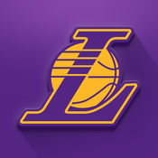

The Los Angeles Lakers
The Past:
The team was founded in 1947 and were originally located in Minneapolis.
They won 5 of their 16 National Championship titles after the NBA's formation in 1949.
Los Angeles made the NBA Finals six times in the 1960s, but lost each series to the Boston Celtics, beginning their long and storied rivalry.
The team acquired another center, Kareem Abdul-Jabbar, who had won multiple MVP awards, but was unable to make the Finals in the late 1970s.
The 1980s Lakers were nicknamed "Showtime" due to their Magic Johnson-led fast break-offense, and won five championships in a 9-year span, including their first ever Finals championship against the Celtics in 1985.
After Abdul-Jabbar’s retirement in 1989 and Johnson’s in 1991, the Lakers’ fortunes took a turn for the worse. The team still regularly made the play-offs—the Lakers missed postseason play only five times in the team’s first 60 seasons—but failed to advance to the NBA finals for the longest period of time in team history. That changed during the 1999–2000 season, however, when newly
hired head coach Phil Jackson guided the Lakers, featuring Shaquille O’Neal and Kobe Bryant, to the first of three consecutive titles.
©2017 Encyclopædia Britannica, Inc.
Records: Bryant holds most individual team records for longevity including most games played (1333), and most minutes logged (48,298). Johnson holds all significant assist records for the club including career assists (10,141), assists in a game (24), and highest assist average for a season (13.1). Johnson also has the most triple doubles, with his 138 over 100 more than the next closest player (Bryant; 17). Elmore Smith holds team records for blocks in a game (17), blocks per game for a season (4.85), and career blocks per game (3.93). The scoring records are mostly shared by Elgin Baylor and Bryant, with Baylor having the highest average for a career (27.4) while Bryant has the highest points scored in a single game (81). Baylor, Bryant and West hold the top five single season scoring averages, with Bryant occupying the numbers one (35.4) and four (31.6) spots,
while Baylor has the second (34.8), and third (34.0), and West the fifth (31.3).
great players:
Magic Johnson, Kobe Bryant, James Worthy, Oscar Robertson, Shaquille O’Neal, Pau Gasol
Link to Lakers Website:
Los Angeles Lakers
| 1947-1960 | Minneapolis Lakers |
| 1960-present | Los Angeles Lakers |